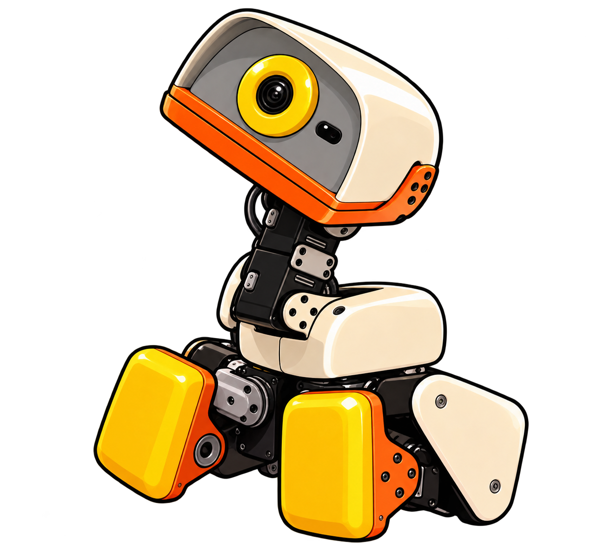

Une question, une expérience, une découverte.
Les agents IA ?
On les apprivoise.


Bienvenue dans le labo !
Comprends les agents IA.
Programme-les. Observe leurs décisions.
Un laboratoire interactif pour découvrir comment les agents intelligents perçoivent leur environnement, prennent des décisions et utilisent des outils.
Premier chapitre disponible · Python dans le navigateur · Sans clé d’API
01 / La carte de ton aventure
Une idée à la fois.
Un agent qui prend forme.
Observer, décider, agir
Découvre la boucle d’un agent, compare deux politiques et programme sa prochaine action.
Ouvrir le premier chapitre →- ProgrammerÀ venir · approfondir les politiques Python
- PlanifierÀ venir · décomposer un objectif
- Utiliser des outilsÀ venir · relier l’agent au monde
- Construire un agent LLMÀ venir · langage et décisions
- Évaluer et sécuriserÀ venir · mesurer et encadrer
02 / La paillasse numérique
Et si le chemin
le plus court était bloqué ?
Observe les décisions du robot, modifie une politique et exécute ton Python. Compare la stratégie gloutonne à la recherche en largeur (BFS) : leurs erreurs racontent autant que leurs réussites.
Dans ce premier laboratoire, l’agent est déterministe. Il n’utilise pas de LLM.
Entrer dans le laboratoire →observation → politique → action03 / Les bons réflexes
Apprendre avec méthode
- 01
Comprendre
Décrire ce que l’agent observe et ce qu’il cherche.
- 02
Expérimenter
Faire un pas. Lire la décision. Changer de stratégie.
- 03
Programmer
Écrire une politique Python et voir son effet.
- 04
Évaluer
Comparer les résultats et expliquer les limites.
04 / La bibliothèque du labo
La curiosité a ses sources.
Pour prolonger l’expérience vers les agents à modèles de langage.
LE COURS · EN FRANÇAISHugging Face — Agents Course ↗LA PUBLICATION · YAO ET AL.ReAct : raisonner et agir ↗LE GUIDE · ANTHROPICBuilding Effective Agents ↗